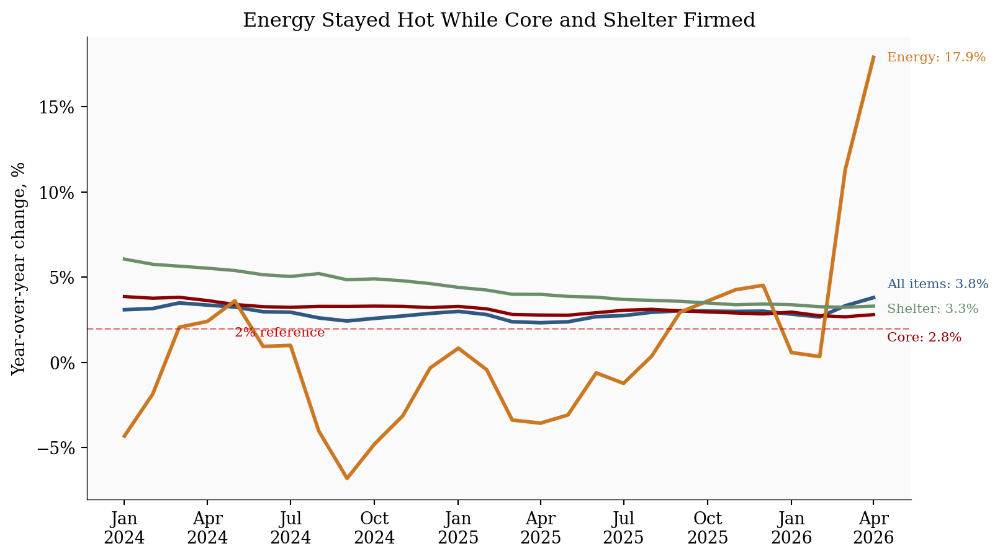
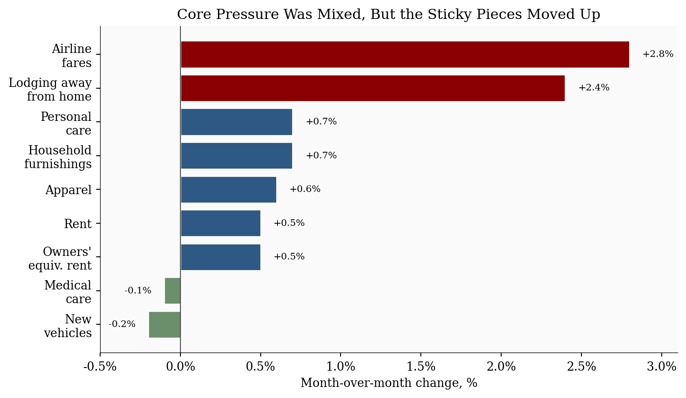

April 2026 CPI: When an Energy Shock Starts Testing the Core Story
economics
inflation
data visualization
markets
federal reserve
Published
May 12, 2026
The release still begins with gasoline, but the audience that should pay closest attention is anyone pricing the path of inflation persistence. The April CPI report is not important because it was hotter than March. It was not. Headline CPI-U slowed to +0.6% month-over-month after March’s +0.9% jump (driven by gasoline and energy). The problem is that the composition changed in a less comfortable direction. Energy was still hot, gasoline was still rising, and core CPI accelerated to +0.4%. Shelter rose +0.6%, services less energy rose +0.5%, and food at home rose +0.7%. The message that should resonate most is for Fed watchers, rate-sensitive investors, and business decision-makers: the inflation story is moving from a visible energy shock toward a test of whether that shock stays isolated.
+0.6%
Headline CPI MoM
after +0.9% in March
+0.4%
Core CPI MoM
up from +0.2%
+17.9%
Energy CPI YoY
gasoline +28.4% YoY
-0.5%
Real Hourly Earnings MoM
consumer pain despite nominal wage gains
BLS CPI News Release, May 12, 2026 | MoM seasonally adjusted, YoY not seasonally adjusted
NoteReproducing this analysis
The Python code used to generate each chart is embedded in this post. Click on any code block to see the implementation. The complete data pipeline includes:
01_fetch_data.py - Fetches historical CPI series from FRED
02_clean_data.py - Computes historical month-over-month and year-over-year changes
04_compute_stats.py - Writes stats/summary_stats.json from the chart data and official BLS release values
The April 2026 release values come from the official BLS CPI News Release. The April chart row uses official BLS monthly and 12-month changes; historical rows come from FRED series CPIAUCSL, CPILFESL, CPIENGSL, CUSR0000SAH1, and CPIFABSL. This keeps the article aligned with the May 12 release while preserving the historical trend context used in prior CPI posts.
1. The Story Before the Audience
The first read on April is mechanical: energy contributed more than 40% of the all-items increase, according to BLS, and gasoline was still rising after March’s spike. That is the part that shows up quickly in household budgets and inflation headlines.
The second read is policy-relevant: core moved from +0.2% in March to +0.4% in April. Shelter, food at home, airline fares, household furnishings, and personal care all moved higher. Some of that may be noise. Some of the shelter pickup may also reflect timing effects as delayed survey collection normalizes after the federal shutdown. But the burden of proof has shifted. The next release has to show that these moves fade before investors or policymakers can treat April as another one-off energy print.1
That ordering identifies the audience. This post is mainly for readers who need to price persistence: Fed watchers, bond and equity investors, corporate planners, and households trying to distinguish a temporary gasoline shock from a broader cost-of-living squeeze. The consumer story matters because it is the transmission channel. The market and policy story matters because it is where the reaction function lives.
2. Where the Heat Moved
Readers who care about persistence should start with the shift in composition. Energy still explains a large share of the headline print, but core inflation, shelter, and food all moved in the wrong direction at the same time. That mix matters more than the headline slowdown from March.
Table 1. Key CPI metrics from the BLS April 2026 release. Month-over-month (MoM) values are seasonally adjusted (SA); year-over-year (YoY) values are official 12-month, not seasonally adjusted (NSA) changes.
CPI category
2026 MoM (SA)
2026 YoY (NSA)
Apr
Mar
Apr
Mar
All items
+0.6%
+0.9%
+3.8%
+3.3%
Core, less food and energy
+0.4%
+0.2%
+2.8%
+2.6%
Energy
+3.8%
+10.9%
+17.9%
+12.5%
Gasoline
+5.4%
+21.2%
+28.4%
+18.9%
Food
+0.5%
0.0%
+3.2%
+2.7%
Shelter
+0.6%
+0.3%
+3.3%
+3.0%
Show code
# Put the categories in April-descending order so the chart reads from the# hottest current component to the summary all-items measure.metrics = pd.DataFrame({"Category": ["Energy", "Shelter", "Food", "Core", "All items"],# Each list below uses the same category order. The values come from# stats/summary_stats.json, which keeps the chart and prose in sync."April": [ stats["energy_mom"], stats["shelter_mom"], stats["food_mom"], stats["core_mom"], stats["headline_mom"], ],"March": [ stats["prev_energy_mom"], stats["prev_shelter_mom"], stats["prev_food_mom"], stats["prev_core_mom"], stats["prev_headline_mom"], ],})# x is simply the numeric position of each category on the horizontal axis.x = np.arange(len(metrics))width =0.36fig, ax = plt.subplots(figsize=(7.2, 3.8))bars_april = ax.bar(x - width /2, metrics["April"], width, label="April", color=COLORS["primary"], edgecolor="white")bars_march = ax.bar(x + width /2, metrics["March"], width, label="March", color=COLORS["light"], edgecolor="white")# Highlight the two story drivers: energy is the shock, core is the persistence test.bars_april[0].set_color(COLORS["warning"])bars_april[3].set_color(COLORS["accent"])ax.axhline(0, color=COLORS["neutral"], linewidth=0.8)ax.set_xticks(x)ax.set_xticklabels(metrics["Category"])ax.set_ylabel("Month-over-month change, %")ax.set_title("April Broadened the Inflation Signal")ax.legend(loc="upper right", frameon=False, fontsize=8)# Label each bar directly so readers do not have to read values off the y-axis.for bars in [bars_march, bars_april]:for bar in bars: value = bar.get_height() ax.text( bar.get_x() + bar.get_width() /2, value +0.12,f"{value:.1f}%", ha="center", va="bottom", fontsize=8, color=COLORS["neutral"], )ax.set_ylim(0, 12.0)plt.tight_layout()fig.savefig(IMG_DIR /"april-2026-cpi-momentum.png", dpi=300, bbox_inches="tight")
Figure 1: March and April CPI momentum by major category. April’s headline print slowed from March, but core, shelter, and food all firmed, making the release broader than a simple energy shock.
3. Energy Is Still the Headline Problem
Energy did not repeat March’s extreme jump, but it did not reverse either. The energy index rose another +3.8% in April after March’s +10.9% surge. Gasoline rose +5.4% on the month and +28.4% over the year. BLS said energy accounted for over 40% of the monthly all-items increase.
That matters because the consumer experience is driven by prices people see often. Gasoline, electricity, fuel oil, and groceries are not abstract indexes. They are high-frequency price signals that shape inflation expectations even when some other categories are stable. The real-earnings release makes the same point from the wage side: average hourly earnings fell -0.5% after adjusting for inflation in April, and were down -0.3% over the year.
Show code
# Keep the trend window short enough for recent inflection points to remain visible.plot_df = df[df.index >="2024-01-01"].copy()fig, ax = plt.subplots(figsize=(8.5, 4.8))# "All items" is headline CPI-U: the full consumer basket before excluding food# and energy. Core removes food and energy to focus on slower-moving inflation.series = {"All items": ("headline_yoy", COLORS["primary"], 2.2),"Core": ("core_yoy", COLORS["accent"], 2.0),"Energy": ("energy_yoy", COLORS["warning"], 2.2),"Shelter": ("shelter_yoy", COLORS["secondary"], 2.0),}# Place end-of-line labels manually. The offsets keep the labels from colliding# where all-items, core, and shelter finish near each other.label_offsets = {"All items": (8, 8),"Core": (8, -14),"Energy": (8, 0),"Shelter": (8, -2),}for label, (col, color, linewidth) in series.items(): ax.plot(plot_df.index, plot_df[col], color=color, linewidth=linewidth, label=label) last_date = plot_df.index[-1] last_val = plot_df[col].iloc[-1] ax.annotate(f"{label}: {last_val:.1f}%", xy=(last_date, last_val), xytext=label_offsets[label], textcoords="offset points", va="center", fontsize=8, color=color, )ax.axhline(2, color=COLORS["fed_target"], linestyle="--", linewidth=1, alpha=0.5)ax.text(plot_df.index[4], 1.55, "2% reference", color=COLORS["fed_target"], fontsize=8)ax.set_title("Energy Stayed Hot While Core and Shelter Firmed")ax.set_ylabel("Year-over-year change, %")ax.xaxis.set_major_formatter(mdates.DateFormatter("%b\n%Y"))ax.yaxis.set_major_formatter(ticker.PercentFormatter(decimals=0))ax.legend().remove()plt.tight_layout()fig.savefig(IMG_DIR /"april-2026-cpi-yoy-trends.png", dpi=300, bbox_inches="tight")

Figure 2: Year-over-year CPI trends through April 2026. Energy remained the outlier, but core and shelter also edged higher, which makes the inflation problem less contained than it looked in March.
4. The Sticky-Core Question
Core CPI is the audience separator in this report. A one-month energy shock is painful but easier for policymakers and markets to discount. A core acceleration is different because it points to categories that tend to move more slowly.
The April details were not uniformly hot. New vehicles fell, communication fell, used cars were flat, and medical care eased. But those offsets were not enough to keep core contained. Shelter rose +0.6%, household furnishings rose +0.7%, airline fares rose +2.8%, apparel rose +0.6%, and personal care rose +0.7%.
The right interpretation is not “core has reaccelerated” as a settled fact. It is more precise than that. April created a monitoring problem. If the next print gives back shelter, food, and travel-services strength, then April was a messy release with an energy aftershock. If it repeats, the policy story changes from delayed disinflation to renewed persistence.
OER means owners’ equivalent rent, the BLS estimate of what homeowners would pay to rent their own homes. It is not connected to gasoline in a direct mechanical way. The connection is interpretive: an energy shock is easier to discount when rent and other sticky services stay calm. When rent, OER, travel, and household goods also move up, the energy shock starts looking like a broader pricing problem.
Show code
# This chart isolates non-energy categories. The purpose is to test whether the# April report was only gasoline, or whether sticky/non-energy categories also moved.component_moves = pd.DataFrame({"Component": ["Lodging away\nfrom home","Airline\nfares","Household\nfurnishings","Personal\ncare","Apparel","Rent","Owners'\nequiv. rent","Medical\ncare","New\nvehicles", ],"MoM": [ stats["lodging_away_mom"], stats["airline_fares_mom"], stats["household_furnishings_mom"], stats["personal_care_mom"], stats["apparel_mom"], stats["rent_mom"], stats["owners_equivalent_rent_mom"], stats["medical_care_mom"], stats["new_vehicles_mom"], ],})# Sorting puts the strongest April increases at the top of the horizontal chart.component_moves = component_moves.sort_values("MoM")colors = [ COLORS["secondary"] if value <0else COLORS["accent"] if value >=1.0else COLORS["primary"]for value in component_moves["MoM"]]fig, ax = plt.subplots(figsize=(8.2, 4.8))bars = ax.barh(component_moves["Component"], component_moves["MoM"], color=colors, edgecolor="white")ax.axvline(0, color=COLORS["neutral"], linewidth=0.8)ax.set_xlabel("Month-over-month change, %")ax.set_title("Core Pressure Was Mixed, But the Sticky Pieces Moved Up")ax.xaxis.set_major_formatter(ticker.FuncFormatter(lambda x, pos: f"{x:.1f}%"))ax.set_xlim(-0.5, 3.1)# Add value labels just beyond each bar. Negative values are labeled to the left.for bar, value inzip(bars, component_moves["MoM"]): offset =0.08if value >=0else-0.08 ha ="left"if value >=0else"right" ax.text(value + offset, bar.get_y() + bar.get_height() /2, f"{value:+.1f}%", va="center", ha=ha, fontsize=8)plt.tight_layout()fig.savefig(IMG_DIR /"april-2026-cpi-core-movers.png", dpi=300, bbox_inches="tight")

Figure 3: Selected April 2026 non-energy CPI components. Shelter and several service-sensitive categories moved higher, while vehicles, communication, and medical care helped offset the core increase.
5. What It Means For
For Fed and policy readers: The April report argues against treating the inflation pickup as only an energy-price disturbance. Core CPI rose +0.4%, shelter accelerated, and services less energy rose +0.5%. That does not force a rate hike by itself, but it makes near-term cuts harder to justify unless labor-market weakness becomes much more obvious.
For consumers: The pressure is visible in the categories households notice most: gasoline, electricity, groceries, and rent. Food at home rose +0.7%, electricity rose +2.1%, and gasoline was still up +5.4% after March’s surge. Even if wage growth is steady, the monthly budget feels tighter when frequent purchases are the source of inflation and real hourly earnings are falling.
For markets: The report is a bad mix for rate-cut expectations: headline inflation is high enough to keep inflation risk visible, while core inflation is firm enough to complicate the “look through energy” argument. Bond markets should care less about whether April was hotter than consensus and more about whether May confirms that shelter and services are reaccelerating.
For businesses: This is the second primary audience, especially for transportation, retail, hospitality, insurance, and other price-reset businesses. Energy and transportation-sensitive firms face margin pressure first, but the broader risk is pricing behavior. If firms see energy, wages, rent, and services all rising together, temporary surcharges and price resets become easier to justify. That is how a relative-price shock can become an inflation persistence problem.
6. What To Watch Next
The next CPI release is scheduled for June 10, 2026. The key question is not whether energy remains high in level terms. It is whether April’s broader core firming repeats.
Three checks matter most:
Shelter: If rent and owners’ equivalent rent stay near +0.5% monthly, core disinflation gets harder.
Services: If services less energy keep rising near +0.5%, the Fed will read the report as persistence, not noise.
Energy pass-through: If gasoline and electricity remain hot while airline fares, furnishings, delivery-sensitive goods, and food also rise, the shock is spreading.
Conclusion
April CPI is a worse report than March for readers who care about persistence, not because the headline monthly print was higher. It was lower. The problem is composition. March was dominated by energy. April still had energy, but it also had a firmer core, hotter shelter, a food rebound, and weaker real hourly earnings. The message should resonate most with policy and market readers because it pushes against easy rate-cut timing. It should also resonate with business readers because it turns energy from a cost shock into a pricing-risk question. Consumers are not the secondary story because they matter less. They are the evidence that the shock is visible enough to shape expectations.
Data sources used for the April 2026 CPI analysis.
Data current as of April 2026 (BLS release: May 12, 2026).
Footnotes
Kiplinger framed the release as an energy-led inflation problem that can limit Fed cuts: Kiplinger inflation outlook. Redfin made the same Fed-patience link through mortgage rates and oil prices: Redfin CPI analysis. Realtor.com called out possible “inflation contagion” while noting shelter may be affected by shutdown-related data timing: Realtor.com CPI analysis. KPMG emphasized the household wage squeeze: KPMG April CPI analysis.↩︎